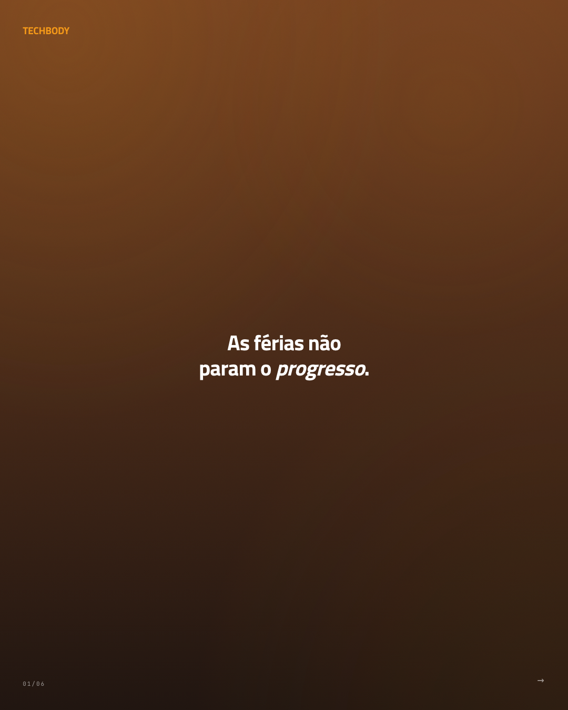
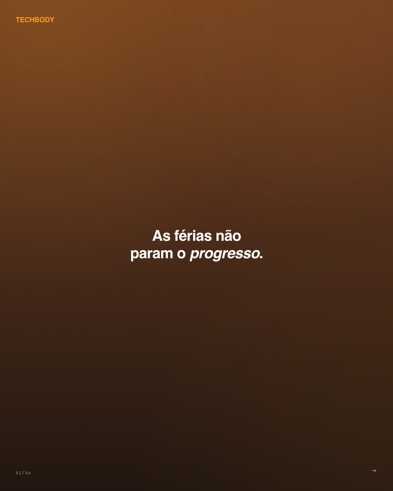
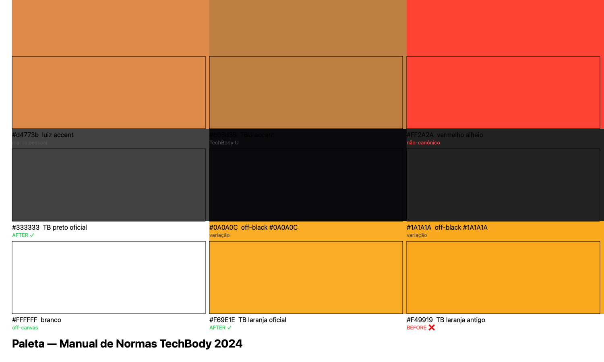

Números da correcção
Auditoria automatizada sobre 86 HTMLs gerados (excluindo .bak e .playback). O "antes" reflecte o estado commitado antes do fix f2c9db2.
Antes & depois — três marcas, um slide cada
Render via Playwright (1080×1350, IG portrait 4:5). O Tom/orange aparece através de gradientes radiais e color-mix() — a diferença entre #F49919 e #F69E1E é subtil no render mas significativa no código-fonte (delta de ~3% em matiz e saturação).



Diff aplicado
Três alterações em cada um dos 86 HTMLs: Google Fonts, CSS variables e inline font:.
Paleta canónica + variantes observadas
A paleta oficial é estritamente três cores. Tudo o resto é variação herdada de designs antigos ou proposta de cada sub-marca.

Por marca e tipo de ficheiro
| Marca | HTMLs | Titillium Web | Gilroy | Manrope | Status |
|---|---|---|---|---|---|
techbody |
27 | 27 | 11 | 14 (dead-code fallback) | conforme |
techbody_u |
26 | 25 | 0 | 8 (dead-code fallback) | conforme |
luiz_santana |
33 | 33 | 25 | 4 (dead-code fallback) | conforme |
| total | 86 | 85 | 36 | 26 (inofensivo) | limpo |
As fontes banidas que ainda aparecem (Manrope, Fraunces, Barlow) estão exclusivamente em dead-code dentro da chain de fallback CSS — o browser usa Trillium Web porque é o primeiro item carregado via @import. Não há render activo dessas fontes.
18 posts com scheduled_for no passado
Marcados em items.json com _missed_schedule: true + razão. Aguardam decisão: reagendar, marcar como publicado retroactivamente, ou descartar.
| id | scheduled_for | formato | tema |
|---|---|---|---|
techbody-2026-05-s01 | 2026-06-12 | story | pos_parto |
techbody-2026-05-s02 | 2026-06-19 | story | reabilitacao_dor |
techbody-2026-05-r02 | 2026-06-17 | reel | primeira_vez_ems |
techbody-2026-05-r03 | 2026-06-23 | reel | mito_atletas |
techbody_u-2026-05-s01 | 2026-06-12 | story | portabilidade |
techbody_u-2026-05-s02 | 2026-06-19 | story | efeito_metabolico |
techbody_u-2026-05-r03 | 2026-06-23 | reel | dialogo_eletro |
luiz_santana-2026-05-s01 | 2026-06-12 | story | consistencia |
luiz_santana-2026-05-s02 | 2026-06-19 | story | dose_certa |
luiz_santana-2026-05-r01 | 2026-06-09 | reel | quem_treina_ems |
luiz_santana-2026-05-r02 | 2026-06-17 | reel | primeiro_dia |
luiz_santana-2026-05-r03 | 2026-06-23 | reel | recovery_reabilitacao |
luiz_santana-2026-06-c06 | 2026-06-14 | carrossel | mitos-eletro |
luiz_santana-2026-06-c07 | 2026-06-16 | carrossel | treino-em-casa |
luiz_santana-2026-06-c08 | 2026-06-17 | carrossel | verao-sem-pausa |
luiz_santana-2026-06-c09 | 2026-06-20 | carrossel | recomeco-apos-pausa |
luiz_santana-2026-06-c10 | 2026-06-22 | carrossel | musculo-longevidade |
techbody-2026-05-c05 | 2026-06-19 | carrossel | emagrecimento-glp1 |
Sequência
- Canva export: Manual de Orientação de Postagens TechBody.pdf (autoria Gabriela TechBody, criador Canva, 15 páginas).
- Hik Padrinho/Luiz Santana envia o PDF via WhatsApp (msg
3BB83B924EE9BB7D791B, JID antigo351917915199@s.whatsapp.net). - Lucca descarrega para
~/Downloads/Manual_de_orientacao_de_postagens_TechBody.pdf(md592e13a6bb1aaaef685fb7e38fce8b1d9). - Auditoria: 88/90 HTMLs com Manrope (não-canónico), 61 com #F49919 (off-brand laranja), 18 posts com
scheduled_forno passado. - Aplicação em batch: 6 passes Python, 86 HTMLs modificados, Google Fonts limpo, paleta canónica aplicada.
- Commit
f2c9db2: fix(brand): apply Manual de Normas TechBody 2024 to all pending posts (89 files, +580 / −544). PushmainOK. - Cloudflare Pages auto-deploy em curso (~90s). Esta página pública após deploy.
Origem canónica
Regras extraídas directamente do PDF e gravadas para referência futura:
~/Downloads/Manual_de_orientacao_de_postagens_TechBody.pdf | |
| MD5 | 92e13a6bb1aaaef685fb7e38fce8b1d9 |
| WhatsApp msg | 3BB83B924EE9BB7D791B |
| Backup items.json | items.json.bak.manual1782679798 |
| Second Brain rule | ~/Second Brain/rules/techbody-brand-manual-2024.md |
| Git commit | f2c9db2 em gontijolucca-prog/pontofinal.site |